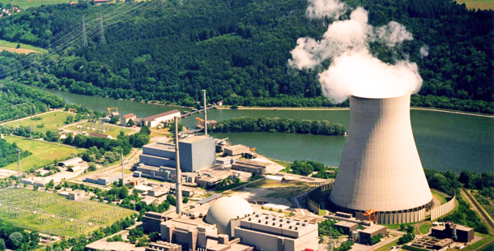
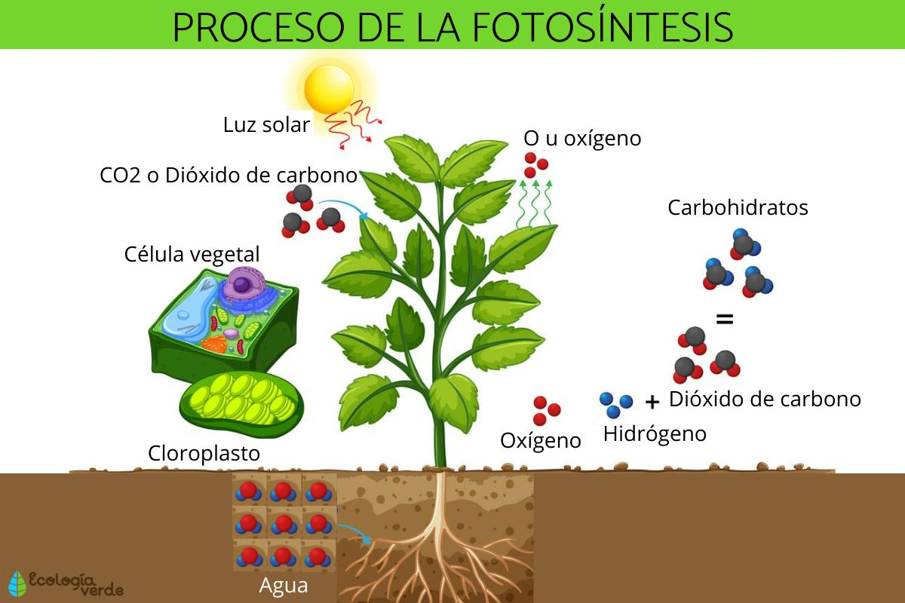
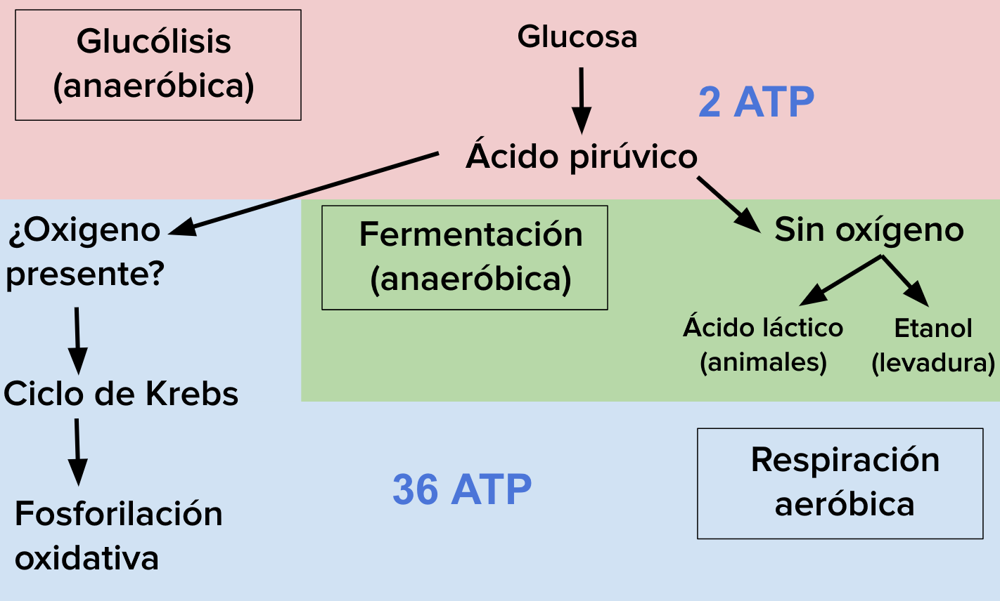
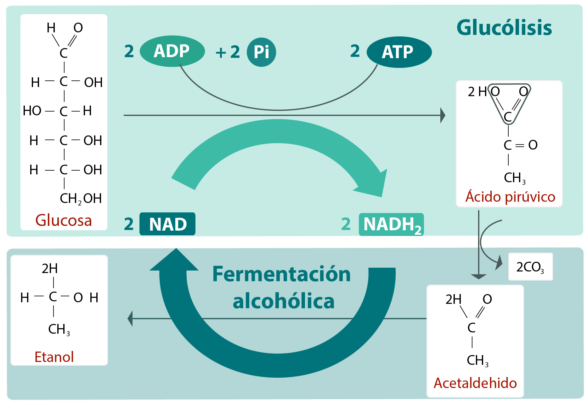
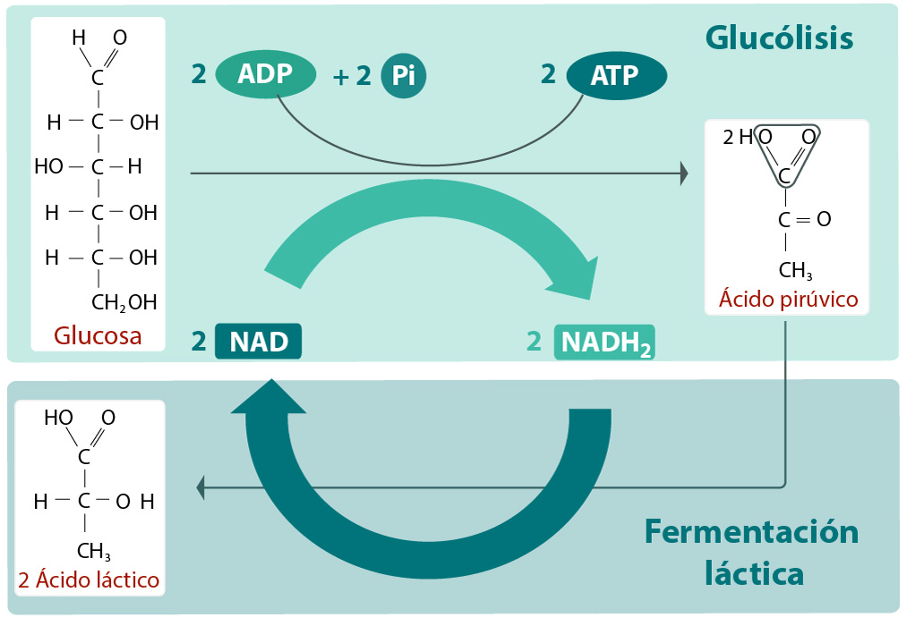
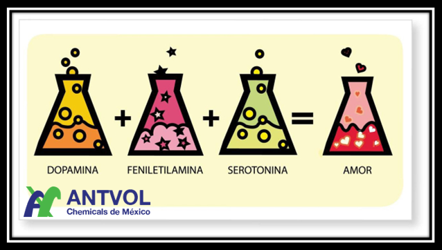

PREPA 17 SEMS UDEG
REACCIONES QUIMICAS
COMPETENCIAS: CDb-CsEx8:Explica el funcionamiento de máquinas de uso común a partir de nociones científicas.
JUAN MANUEL GERVACIO SILVA, KENIA NAIROBI VAZQUEZ DIAZ
5A MATUTINO BTDS
MAESTRA: BEATRIZ ALCARAZ
Las reacciones químicas son procesos termodinámicos que transforman una materia. en este proceso, dos o más sustancias químicas, también llamadas reactivos, cambian su estructura molecular y enlaces químicos para consumir o liberar energía.
 La combustión de hidrocarburos se refiere a la reacción química en la que un hidrocarburo reacciona con oxígeno para crear dióxido de carbono, agua y calor. Los hidrocarburos son moléculas que constan de hidrógeno y carbono. Son más famosos
por ser el componente principal de los combustibles fósiles, es decir, el gas natural, el petróleo y el carbón. Por esta razón, los recursos de combustibles fósiles a menudo se denominan recursos de hidrocarburos.
La energía se obtiene de los combustibles fósiles mediante la combustión (quema) del combustible. Aunque existen impurezas en los combustibles fósiles, la combustión de hidrocarburos es el proceso principal en la quema de estos combustibles.
La fotosíntesis o función clorofílica es un proceso químico que consiste en la conversión de materia inorgánica a materia orgánica gracias a la energía que aporta la luz solar. En este proceso, la energía lumínica se transforma en energía química estable,
siendo el NADPH (nicotín adenín dinucleótido fosfato) y el ATP (adenosín trifosfato) las primeras moléculas en las que queda almacenada esta energía química. Con posterioridad, el poder reductor del NADPH y el potencial energético del grupo fosfato del ATP
se usan para la síntesis de hidratos de carbono a partir de la reducción del dióxido de carbono (CO2).
La vida en nuestro planeta se mantiene fundamentalmente gracias a la síntesis que realizan en el medio acuático las algas, las cianobacterias, las bacterias rojas, las bacterias púrpuras,
bacterias verdes del azufre y en el medio terrestre las plantas, que tienen la capacidad de sintetizar materia orgánica (imprescindible para la constitución de los seres vivos) partiendo de la luz y la materia inorgánica. De hecho, cada año los organismos fotosintetizadores fijan en forma de
materia orgánica en torno a 100 000 millones de toneladas de carbono.
La respiración aerobia y anaerobia son tipos de respiración celular, es decir, formas que tienen algunas células para obtener energía a partir de lo que consumen. Se diferencian en que para realizar la respiración aerobia se requiere oxígeno, mientras que en la respiración anaeróbica está ausente el oxígeno.
Además, en la respiración aeróbica se produce más energía en comparación con la respiración anaeróbica; sin embargo, tiene más pasos químicos, por lo que toma más tiempo realizarla.
La respiración aeróbica y anaeróbica comparten en su primera fase la glicólisis o glucólisis, una cadena de reacciones químicas que transforman la glucosa en moléculas más pequeñas.
Los metales presentes en los celulares, como el hierro, el aluminio y el cobre, pueden oxidarse con el tiempo debido a la exposición al aire y la humedad. La oxidación es un proceso químico en el que los átomos de un metal pierden electrones y se combinan con oxígeno para formar óxidos.
La oxidación puede ser perjudicial para el funcionamiento del celular, ya que puede afectar la conductividad eléctrica de los componentes y reducir su vida útil. Además, la oxidación también puede causar la decoloración o el cambio de color en la superficie del celular.
Para prevenir la oxidación de los metales en el celular, es importante mantenerlo alejado de la humedad y la exposición al aire. También se pueden utilizar fundas o estuches que protejan el celular de los elementos externos y se pueden aplicar revestimientos protectores en la superficie del celular para reducir la exposición al aire y la humedad.
Es un proceso bioquímico en el que las levaduras, un tipo de microorganismo, descomponen los azúcares presentes en materiales vegetales como la uva, la caña de azúcar o los cereales, para producir alcohol etílico y dióxido de carbono.
En la producción de bebidas alcohólicas, como el vino, la cerveza o el whisky, se lleva a cabo este proceso de fermentación alcohólica. Las levaduras utilizadas en la fermentación se añaden al mosto, que es el líquido resultante de la extracción del jugo de la fruta o del cereal, junto con otros ingredientes que pueden variar según el tipo de bebida a producir.
Durante el proceso de fermentación, las levaduras convierten los azúcares presentes en el mosto en alcohol y dióxido de carbono, liberando calor en el proceso. El dióxido de carbono se libera en forma de burbujas, lo que da lugar a la carbonatación de la bebida.
Una vez que la fermentación ha concluido, se procede a la destilación o al embotellado, según el tipo de bebida a producir. El alcohol obtenido puede ser ajustado en su graduación mediante la adición de agua.
Es un proceso bioquímico en el que los azúcares presentes en los alimentos se descomponen en ácido láctico por la acción de bacterias lácticas. Este proceso es común en la industria alimentaria para la producción de una variedad de alimentos, incluyendo el yogur, el queso, la chucrut, la col agria y otros alimentos fermentados.
Durante la fermentación láctica, las bacterias lácticas utilizan los azúcares presentes en el alimento como fuente de energía para su crecimiento y reproducción. A medida que las bacterias metabolizan los azúcares, producen ácido láctico como subproducto, lo que da lugar al sabor y la textura característicos de los alimentos fermentados.
En la producción de yogur, por ejemplo, la leche se calienta para matar cualquier bacteria presente y luego se inocula con cultivos de bacterias lácticas. Las bacterias fermentan la lactosa presente en la leche, produciendo ácido láctico y dando lugar al espesamiento y la acidez característicos del yogur.
En la producción de queso, la leche se cuaja con enzimas y luego se inocula con bacterias lácticas, que fermentan el azúcar presente en el lactosuero para producir ácido láctico. El ácido láctico a su vez ayuda a acidificar el queso y darle su sabor y textura distintivos.
No hay una clasificación universalmente aceptada de las reacciones químicas del amor, pero se han propuesto varias teorías y modelos. A continuación se presentan seis posibles reacciones químicas que se han propuesto en relación al amor:
| Tipo de reaccion | formula | Aplicacion |
|---|---|---|
| Adicion | A+B → AB | Muchos aditivos alimentarios se agregan a los alimentos para mejorar su sabor, textura, apariencia o durabilidad. Los aditivos comunes incluyen conservantes, colorantes, edulcorantes, espesantes y emulsionantes. |
| Sustitucion simple | A+BC → AC+B | La sustitución simple se utiliza en la decoloración del cabello. Los productos decolorantes contienen peróxido de hidrógeno, que sustituye los grupos funcionales de pigmentos naturales en el cabello, produciendo una decoloración. |
| Descomposicion | AB → A+B | Los blanqueadores contienen hipoclorito de sodio (NaClO) que se descompone en cloro (Cl2) y agua (H2O) al entrar en contacto con una sustancia orgánica como la suciedad o las manchas en la ropa. El cloro actúa como agente blanqueador y desinfectante. |
| Doble sustitucion | AB+CD → AD+CB | Se utiliza en la precipitación de sales, como la formación de sulfato de calcio (CaSO4) en la producción de yeso. |
| Combustion | CH4 + 2O2 → CO2 + 2H2O | Se utiliza para producir energía térmica y eléctrica. Esta energía se utiliza en la calefacción de hogares, la generación de electricidad y el transporte. |